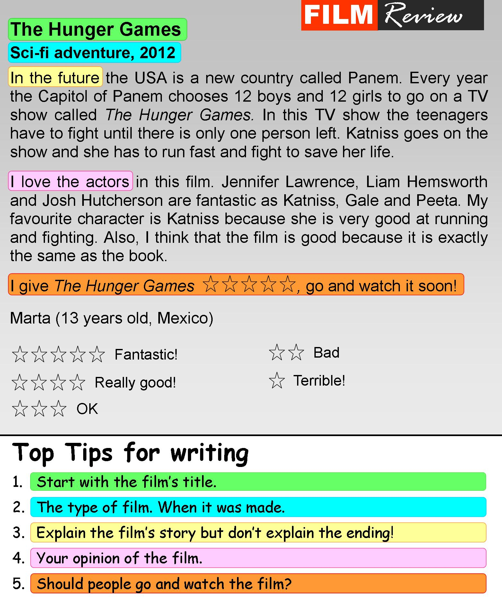

Instructions
Do the preparation exercise first. Then do the other exercises.
Reading

Discussion
What's your favourite film? Why do you like it?
Language level
Topics
Personal online tutoring
EnglishScore Tutors is the British Council’s one-to-one tutoring platform for 13- to 17-year-olds.

Comments